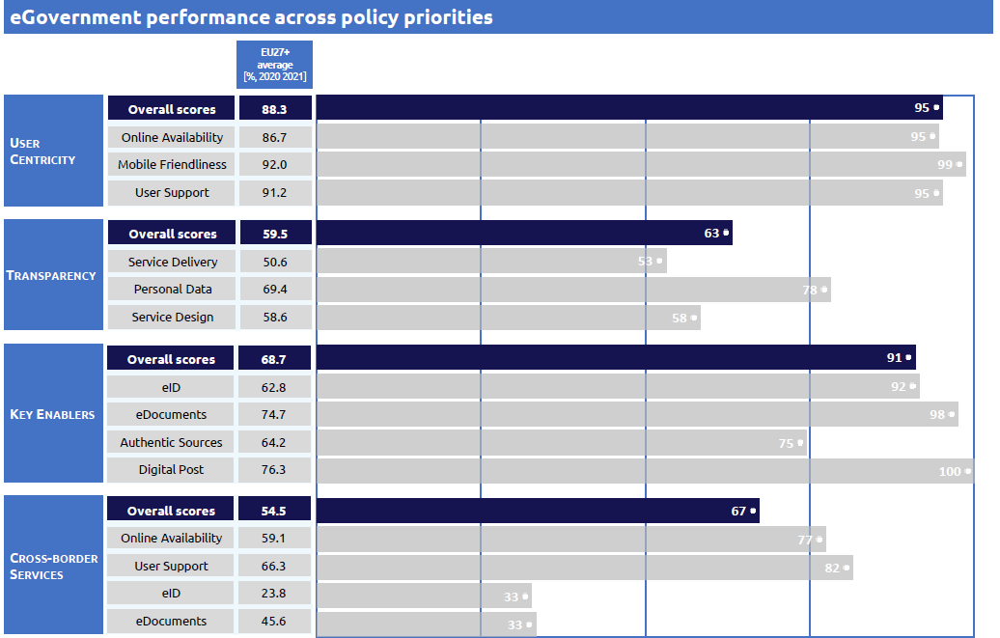
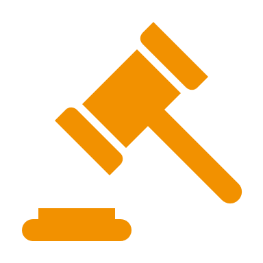

Digital Public Administration factsheet 2021
Norway
Digital Public Administration factsheet 2022
Table of Contents
2 Digital Public Administration Highlights 10
3 Digital Public Administration Political Communications 12
4 Digital Public Administration Legislation 21
5 Digital Public Administration Governance 27
6 Digital Public Administration Infrastructure 31
7 Cross-border Digital Public Administration Services for Citizens and Businesses 40
Country
Profile
1
Country Profile
Digital Public Administration Indicators
The following graphs present data for the latest Digital Public Administration Indicators for Norway compared to the EU average. Statistical indicators in this section reflect those of Eurostat at the time the Edition is being prepared.
Percentage of individuals using the internet for interacting with public authorities in Norway | Percentage of individuals using the internet for obtaining information from public authorities in Norway |
Percentage of individuals using the internet for downloading official forms from public authorities in Norway | Percentage of individuals using the internet for submitted completed forms to public authorities in Norway |
Interoperability State of Play
In 2017, the European Commission published the European Interoperability Framework (EIF) to give specific guidance on how to set up interoperable digital public services through a set of 47 recommendations. The picture below represents the three pillars of the EIF around which the EIF Monitoring Mechanism was built to evaluate the level of implementation of the EIF within the Member States. It is based on a set of 71 Key Performance Indicators (KPIs) clustered within the three main pillars of the EIF (Principles, Layers and Conceptual model), outlined below.

Source: European Interoperability Framework Monitoring Mechanism 2021
Source: European Interoperability Framework Monitoring Mechanism 2021
Source: European Interoperability Framework Monitoring Mechanism 2021
Source: European Interoperability Framework Monitoring Mechanism 2021
eGovernment State of Play
The study evaluates online public services on four dimensions:
- User centricity: indicates the extent to which a service is provided online, its mobile friendliness and its usability (in terms of available online support and feedback mechanisms).
- Transparency: indicates the extent to which governments are transparent about (i) the process of service delivery, (ii) policy making and digital service design processes and (iii) the personal data processed in public services.
- Cross-border services: indicates the extent to which users of public services from another European country can use the online services.
- Key enablers: indicates the extent to which technical and organizational pre-conditions for eGovernment service provision are in place, such as electronic identification and authentic sources.
The 2022 report presents the biennial results, achieved over the past two years of measurement of all nine life events used to measure the above-mentioned key dimensions. More specifically, these life events are divided between seven ‘Citizen life events’ (Starting a small claim procedure, Moving, Owning a car, Health measured in 2021, and Career, Studying, Family life, measured in 2020) and two ‘Business life events’ (Regular Business Operations, measured in 2021, and Business start-up, measured in 2020).

Source: eGovernment Benchmark Report 2022 Country Factsheets

Digital Public Administration Highlights
2
Digital Public Administration Highlights
Digital Public Administration Political Communications |
In September 2021, the Ministry of Local Government and Regional Development published the national strategy ‘Digital Throughout Life’ to improve digital participation and competence in the population. The goal of the strategy is to prevent digital exclusion and provide what the population needs to be able to use digital tools and services the society depends upon today. Everyone should be able to participate in society, in democratic processes and in social communities by using digital tools.
 | Digital Public Administration Legislation |
Digital Public Administration Governance |
In 2020, the Norwegian Digitalisation Agency was established. The agency is the Norwegian government’s foremost tool for faster and more coordinated digitalisation of the Norwegian public sector.
Digital Public Administration Infrastructure |
Digital Public Administration Political Communications
3
Digital Public Administration Political Communications
Specific political communications on digital public administration
Digital Throughout Life
In September 2021, the Ministry of Local government and Regional Development published a national strategy to improve digital participation and competence among the population. The goal of the strategy is to prevent digital exclusion and provide what the population needs to be able to use the digital tools and services society depends upon today. Everyone should be able to participate in society, in democratic processes and in social communities by using digital tools.
The strategy focuses on several challenges such as digital vulnerability, the digital divide and exclusion. The government aims are:
- To help prevent digital exclusion in all age groups;
- To facilitate free, quality-assured assistance services for citizens with little or no digital competence;
- To further develop the partnership with KS (Norwegian Association of Local and Regional Authorities) to facilitate the development of good, local guidance services throughout the country;
- To hold the business sector more accountable for including all citizens in the digital services they provide;
- To help ensure that, as a rule, publicly funded low-threshold services aimed at people with little or no digital competence are free;
- To ensure regular mapping of citizens’ level of digital competence;
- To work together with public, private and voluntary providers on a campaign to encourage citizens who need to improve their digital competence to register for courses; and
- To consider whether one public agency should be assigned overarching responsibility for coordinating national efforts to improve the population’s digital competence.
The strategy has some focus areas:
- Internet access (the digital foundation);
- Available ICT equipment;
- Basic digital skills;
- User friendly digital services;
- Digital judgement (ability to reflect and think critically); and
- Other measures (guidance, user input).
White Paper on An Innovative Public Sector (Report. St. 30 (2019/2020))
In July 2020, the Norwegian government presented the White Paper on Innovation in the Public Sector to the Norwegian Parliament (Stortinget). The document addresses the development in this field, the present situation, the need for change and the government policy to foster innovation in the public sector. To achieve this goal, the government has developed three principles to foster public sector innovation:
- Politicians and public authorities need to ensure freedom of action and provide incentives for innovation;
- Leaders must develop a culture of innovation and the ensuing competence, where people have the courage to think differently and learn from mistakes and successes; and
- Public agencies must seek new forms of collaboration.
With increased attention to the development of cross-cutting services, an innovation culture, digital leadership skills and new models for collaboration across sectors and levels of government, the paper aims to contribute in the long run to developing new business models in the public sector.
The newly adopted strategy has five key priorities:
- A user centric focus;
- ICT should constitute a significant input factor for innovation and productivity;
- Strengthened digital competence and inclusion;
- An effective digitisation of the public sector; and
- Sound data protection and information security.
Advanced use of ICT in business and public sectors depends on a good infrastructure (broadband) and a sufficient knowledge of ICT within the population. It is important that technological solutions are accessible to everyone, including the visually and hearing impaired. In addition, to achieve the objectives of ICT policy, the research and development of ICT and advanced ICT skills needs to be strengthened.
One Digital Public Sector: Digital Strategy for the Public Sector 2019–2025
- Achieve the digitalisation of the public sector in a transparent, inclusive and trustworthy way;
- Perform more tasks digitally as well as the delivery of services;
- Encourage citizens, businesses and voluntary organisations to communicate digitally with the public sector;
- Exploit the sharing and using of data to create user-friendly services and to promote value creation for businesses;
- Help local and central government agencies to develop their services based on a common digital ecosystem for cooperation; and
- Help local and central government agencies to gain from digitalisation in a systematic manner.
The Action Plan accompanying this strategy is coordinated by the Norwegian Digitalisation Agency.
Digital21
Digital21 was initiated by the Norwegian Ministry of Trade and Industry as a result of recommendations in the industrial report, Meld. St. 27 (2016-2017) Industry - Greener, Smarter and More Innovative. Digital21 is a government-elected committee that gives advice and recommendations to authorities on how to facilitate business development and utilise new expertise, technology and research through digitalisation. The purpose is to create a strategy across industries and fields of expertise, where key actors support common goals and recommended measures.
The long-term goal of Digital21 is to support and accelerate digitalisation for businesses. To do so, Digital21 has identified six areas of significant importance:
- Emerging technologies;
- Research, development and innovation;
- Competence;
- Computer resources and infrastructure;
- Safety; and
- Public framework.
Digital21 has established expert groups in each of these six areas.
Interoperability
Digital Interoperability Framework
The Digital Interoperability Framework was first published in April 2018. It aims to help public enterprises define, develop and manage digital services, including cross-sector services, and to facilitate the exchange of data and services between public services.
The framework is based on the European Interoperability Framework, and covers organisational, judicial, semantic and technical aspects of interoperability.
The interoperability framework is also related to the Norwegian architecture principles. The principles were revised in 2019 and a new version was published in January 2020. Increased interoperability is one of the main considerations of the new version. The principles are mandatory for State-level public entities, while local and regional level public entities are strongly recommended to use the principles as well.
Key enablers
Access to public information
White Paper on ‘Data as a Resource’ (Report St. 22 (2020–2021))
In March 2021, the Norwegian government presented the White Paper on Data as a Resource – Data-driven Economy and Innovation. This white paper includes national principles for sharing and using data.
The government's ambition is to increase data sharing within the business community and between the public and private sectors. Although data make up an ever-larger share of value creation in most Norwegian industries and sectors today, the business community must become even better at utilising its own data and to share data within established value chains. Increased digitalisation and better data utilization will be important if Norwegian businesses are to remain competitive nationally and internationally.
Public data is of value for businesses in that they can be used in new contexts, interconnected with different data and contribute to innovation, new services and products.
eID and Trust Services
New Strategy for eID
The Ministry of Local Government and Regional Development has decided to put in place a new Strategy for Electronic Identification (eID), due to be published later in 2022.
The main goals for eID and trust services are laid out in the One Digital Public Sector strategy. It states that all citizens should have an eID that can be used for the services they need. All groups, including foreign nationals without a Norwegian national identity number, and children and adolescents, should be able to obtain an eID at the level they need. Individuals who are unable to act digitally themselves, must have the opportunity to be represented by a proxy. Provisions must therefore be made for the use of digital authorisations and digital consent. There is also a need to facilitate the use of electronic employee IDs.
Security aspects
National Cybersecurity Strategy
On 30 January 2019, a new National Cybersecurity Strategy was released by the Ministry of Justice and Public Security and the Ministry of Defence. It is the fourth of its kind in the country and is intended to address issues such as the need to reinforce public-private, civilian-military and international cooperation. The primary target groups are authorities and companies in both public and private sectors, including municipalities. Moreover, the strategy lays the foundations for ensuring private individuals the necessary knowledge and understanding of risks in order to use technology in a safe and secure way.
The main goals are organised in five priority areas (preventive cybersecurity; cybersecurity in critical societal functions; competence; detect and handle cyberattacks; prevent and combat cybercrime) and sets a two-part list of measures: part one describes key measures that support the strategy and part two lists ten basic measures that both public and private companies are recommended to implement.
Interconnection of base registries
Once-Only Principle
eProcurement
Programme for Digital Procurement
It aims to provide great benefits for the business sector in the form of simpler processes, less handling of paper documents and increased reuse.
An all-digital procurement process streamlines and facilitates an important and resource-intensive process. Participation in public procurement competitions takes less time and becomes more attractive to businesses, especially small and medium-sized enterprises.
For public clients, the full digitalisation of the procurement process leads to resource savings and increased quality as well as greater transparency. The potential quantitative gains directly related to digitalisation have been estimated to be approximately NOK 3.6 billion in the investment period.
Domain-specific political communications
Transportation Sector Public Data Strategy
The purpose of the Transportation Sector Public Data Strategy is to support the increased use of open public data from the transportation sector.
Data analysis can help optimise processes, decisions, and forecasts of future events. At the same time, increased use of data can contribute to efficiency, innovation and business development. Data are the "fuel" in the digital economy and in the increasingly digitalised transport sector. The potential of increased use of open public data from the transport sector is considerable.
To support this trend, the availability of public data from State-owned enterprises needs to be extended.
2025 Geodata Strategy
Geographic information concerns location objects, events and conditions. The term is often abbreviated to location data or geodata.
The 2025 Geodata Strategy was launched by the Norwegian government on 1 November 2018 and aims at addressing the needs of sectoral agencies at various government levels, computer manufacturers, technology providers, entrepreneurs and cross-sector users. The Norwegian Mapping Authority is the national spatial data coordinator.
National Strategy for eHealth
eHealth is a prerequisite for solving the challenges of a fragmented health care system. The strategy is aimed at providing efficient, sustainable and paper-free health care services. The strategy covers the period 2017–2022, and it was updated in 2019. It builds on the ambitions of the White Paper ‘One patient – One Record’, including health personnel’s simple and secure access to patient information, citizens’ access to simple and secure digital services, and the availability of health data for quality improvement, health surveillance, management and research.
White Paper on Digital Transformation and Development Policy
The White Paper on Digital Transformation and Development Policy defines and gives direction to digitalisation in Norwegian development policy and cooperation. It aims to contribute to more efficient development cooperation and to increase the capacity of development cooperation between partners to make use of digital technologies.
Digitalisation Strategy for the Climate and Environmental Sector 2020–2024
The Digitalisation Strategy for the Climate and Environmental Sector 2020–2024 was launched in April 2020. Some of its main targets are increasing the availability of user-oriented environmental information and environmental data that are reliable, open and free-of-charge.
Emerging technologies
Artificial Intelligence (AI)
National Strategy for Artificial Intelligence
- A high level of public trust in both business and public sectors;
- A digitally competent population and business sector;
- An excellent infrastructure and high-quality registry data that span over many decades;
- Well-developed e-Governance and public agencies that have come a long way with digitalisation and that have the capacity and expertise to experiment with new technologies; and
- Tripartite cooperation between employers, unions and government, which facilitates cooperation when restructuring is necessary.
The strategy goes on to highlight that:
- AI developed and used in Norway should be built on ethical principles, and respect human rights and democracy;
- Research, development and use of artificial intelligence (AI) in Norway should promote responsible and trustworthy AI;
- Development and use of AI in Norway should safeguard the integrity and privacy of the individual; and
- Cybersecurity should be built into the development, operation and administration of systems that use AI.
Supervisory authorities should make sure that AI systems in their areas of supervision are operated in accordance with the principles for responsible and trustworthy use of AI.
The strategy outlines the importance of regulatory sandbox initiatives as tools in the Norwegian public administration. One example is the ongoing cooperation between the National Archival Service and the Norwegian Digitalisation Agency, where participants in the initiative are being challenged to find new and innovative ways of combining documentation management, freedom of information and personal data protection. Another example is the cooperation between the Data Protection Agency and the Norwegian Labour and Welfare Administration (NAV), which aims to stimulate innovation of ethical and responsible AI, with extra attention being paid to personal data protection. This latter initiative focusses on the specific use case of workers who need to take sick leave and helps the Labour and Welfare Administration identify people who need specific attention in a more targeted way.
Declaration on AI in the Nordic-Baltic Region
- Improving opportunities for skills development with the goal of enabling more authorities, companies and organisations to use AI;
- Enhancing access to data for AI to be used for better service to citizens and businesses in the region;
- Developing ethical and transparent guidelines, standards, principles and values to guide when and how AI applications should be used;
- The objective that infrastructure, hardware, software and data, all of which are central to the use of AI, are based on standards, enabling interoperability, privacy, security, trust, good usability, and portability;
- Ensuring that AI gets a prominent place in the European discussion and implementation of initiatives within the framework of the Digital Single Market;
- Avoiding unnecessary regulation in the area, which is under rapid development; and
- Utilising the structure of the Nordic Council of Ministers to facilitate collaboration in relevant policy areas.
Distributed ledger technologies
Distributed Truth
In 2018, a study for the Ministry of Local Government and Modernisation was prepared on the opportunities and challenges related to the use of blockchain technology.
Big data
As the future unfolds, data will become an increasingly important resource and input for the business community as well as for society in general. This represents a major economic opportunity for Norwegian businesses and society and will be a key to government policies and priorities going forward.
Norwegian Data Centre – Sustainable, Digital Powerhouses
Other communications
In 2016, Vivento and Agenda Kaupang prepared the report Review and assessment of big data in public sector by assignment of the Ministry of Local Government and Modernisation.
Cloud computing
Launched in 2016 by the Ministry of Local Government and Modernisation, the Cloud Computing Strategy addresses several challenges that public sector enterprises face when they consider using cloud services. It also lists measures the Norwegian government should take to ensure a secure and proper use of cloud computing.
Internet of Things (IoT)
The political communication in this area is mentioned as part of other political communications. The white paper Our Common Digital Foundation (see 3.5.7) also addresses IoT.
High-performance computing
No political communication has been adopted in this field to date.
High-speed broadband connectivity
White Paper on Our Common Digital Foundation (Report. St. 28 (2020–2021))
Letter of Intent on the Development of 5G in the Nordic Region

Digital Public Administration Legislation
4
Digital Public Administration Legislation
Specific legislation on digital public administration
Public Administration Act
The Public Administration Act sets out the procedure in cases concerning public administration. The act states that the public sector must communicate digitally with citizens by default, unless they choose to opt out.
The Public Administration Act is currently under revision. One of the main rationales for the revision is the digitalisation of public administration.
Regulation on Electronic Communication with and within Public Administration
The Regulation on Electronic Communication with and within Public Administration is intended to promote predictability and flexibility, and to facilitate the coordination of secure and appropriate technical solutions.
Regulation on IT Standards in Public Administration
The Regulation on IT Standards in Public Administration is intended to promote interoperability with and within public administration through the use of common standards and architectures. In 2021, the Norwegian Digitalisation Agency carried out an evaluation of the Regulation on IT Standards in Public Administration, which is currently under revision.
Regulation on universal design of information and communication technology
The Regulation on Universal Design of ICT came into effect in Norway in 2013. The requirements in the regulation are relevant for private sector businesses, organisations, and public sector bodies. They are applicable to websites, mobile applications, and self-service machines. The regulation is based on the Equality and Anti-Discrimination Act of 2009.
Digitalisation Circular
The Digitalisation Circular is an annual circular presenting the Norwegian government’s main directives and recommendations for digitalisation in the public sector. The directives are mandatory for most State-level entities and recommended for local-level government (municipalities and counties).
Interoperability
No legislation has been adopted in this field to date.
Key enablers
Access to public information
Constitution of Norway
According to Article 100, everyone has a right of access to documents of the State and municipal administration, as well as a right to follow the proceedings of the courts and democratically elected bodies. Limitations to this right may be prescribed by law to protect the privacy of individuals or for other such purposes. It is the responsibility of State authorities to create the conditions that facilitate open and enlightened public discourse.
Freedom of Information Act
The Freedom of Information Act No. 69 of 19 June 1970 was repealed by Act No. 16 of 19 May 2006 relating to the right of access to documents held by public authorities and public undertakings. The purpose of this Act is to facilitate an open and transparent public administration, and thereby strengthen freedom of information and expression, democratic participation, legal safeguards for the individual, confidence in public authorities and control by the public. Furthermore, it shall ease the re-use of public information.
Re-use of Public Sector Information
Norway has notified the full transposition of the European Directive on the re-use of Public Sector Information (PSI Directive). The Directive is implemented in the Freedom of Information Act.
eID and Trust Services
eSignatures Legislation
Act No. 81 of 15 June 2001 relating to electronic signature (Electronic Signature Act) contains detailed provisions for the electronic identification of persons and gives qualified electronic signatures equal status to traditional signatures for administrative purposes. The Act, updated on 17 June 2005, implements the relevant Directive 1999/93/EC.
eIDAS Regulation
Regulation (EU) No. 910/2014 (eIDAS Regulation) is a legal act on European level setting rules for secure and seamless use of electronic identification and electronic transactions in the European Single Market. Since its introduction in 2014 it has been progressively introduced in the whole EU/EEA area. The eIDAS Regulation has been incorporated into Norwegian law, coming into effect in June 2018.
Security aspects
Personal Data Act
The purpose of Act No. 31 of 14 April 2000 relating to the processing of personal data (Personal Data Act) is to protect natural persons from the violation of their right to privacy through the processing of personal data. It ensures that personal data is processed in accordance with the fundamental respect for the right to privacy, including the need to protect personal integrity and private life, and that personal data is of adequate quality. This Act transposes Directive 95/46/EC of the European Parliament and of the Council of 24 October 1995 on the protection of individuals with regard to the processing of personal data and on the free movement of such data into Norwegian law.
An updated Personal Data Act came into effect July 2018, incorporating the General Data Protection Regulation.
Personal Data Regulations
The regulations on the processing of personal data (Personal Data Regulations) were laid down by the Royal Decree of 15 December 2000 pursuant to Act No. 31 of 14 April 2000 on the processing of personal data (Personal Data Act), as amended on 23 December 2003.
Interconnection of base registries
Population registry
The Population Registry Act is divided into six different chapters:
- Organisation of the registry;
- Information and notification requirements;
- Confidentiality;
- Use of the registry’s information;
- Penalty clauses; and
- Domicile registration of cabinet members and members of parliament.
The Act positions the population registry as a central national registry, which includes records of persons, who are or have been residents of Norway, who were born in Norway and who were assigned ID numbers. The State must ensure the maintenance of the population registry, bearing its costs. The information in the registry is gathered for tax, electoral and population analyses purposes by local tax assessment offices and is overseen by the Directorate of Taxes (Skattedirektoratet). Information from the registry, e.g., names, addresses, citizenship, identification numbers, employment and civil status of individuals, is only accessible by authorised public sector offices. However, citizens may apply to access the information from the registry for legal purposes.
Companies Registry
The registration of companies is regulated by the Law on Legal Entities No. 15 of 3 June 1994 with its respective amendments. The Law is also known as the Entity Registration Act. The Law aims to promote efficient use and coordination of public information regarding legal persons, sole proprietorships and other registries through the creation, organisation and operation of a national registry. It regulates the type of entities to be registered and the information to be recorded, the relationship with the affiliated registries, the notifications to the registry, the registration, the inspection of messages, and the exchange and disclosure of information. Private businesses have access to public information through the commercial distributor.
Land Registry
The Law on Land Registration and the Law on Cadastre regulate the operation of the Land Registry and the Cadastre. The former refers to the Land Registry authorities and all the information regarding the registration procedure. The latter regulates the maintenance, access, collection and processing of data, public fees, sanctions and fines related to the Cadastre. Even though no former definition exists regarding land registry, the Law on Cadastre defines the cadastre as “the country's official registry of real estate properties, residential buildings and addresses”.
eProcurement
Public Procurement Act
Norway notified the full implementation of Directives 2004/17/EC and 2004/18/EC of the European Parliament and of the Council of 31 March 2004 which state that in view of new developments in information and telecommunications technology and the simplification that these can bring in terms of publicising contracts, and the efficiency and transparency of procurement procedures, electronic means should be put on a par with traditional means of communication and information exchange.
eInvoicing Legislation
B2B eInvoicing has been mandatory for central government entities in Norway since 2011. In 2019 new legislation has been introduced to make eInvoicing mandatory for all public sector entities, both at State and municipal level. eInvoicing is regulated by Regulation FOR-2019-04-01-444 (Forskrift om elektronisk faktura i offentlige anskaffelser).
Domain-specific legislation
eCommerce Act
The eCommerce Act No. 35 of 23 May 2003 transposes into national law the EU Directive on Electronic Commerce (Directive 2000/31/EC). It applies to electronic commerce and other information society services and regulation and control of such services by public authorities. Its purpose is to ensure free movement of information society services within the European Economic Area (EEA).
Electronic Communications Act
The Electronic Communications Act No. 83 of 4 July 2003 aims to ensure sound, reasonably priced and future-oriented electronic communications services for Norwegian users through the efficient use of society’s resources. This is to be achieved by facilitating sustainable competition, as well as stimulating industrial development and innovation. The Act regulates the transmission of electronic communications in addition to the associated infrastructure, services, equipment and installations.
Archival Act
The Archival Act No. 126 of 4 December 1992 aims to secure a holistic documentation of society. The purpose of the act is to guarantee that documentation, which has cultural, research, administrative and rights-based importance, is kept for the future. The act provides rules for archiving in public administration, including electronic archiving.
Emerging technologies
Artificial Intelligence (AI)
No legislation has been adopted in this field to date.
Distributed ledger technologies
No legislation has been adopted in this field to date.
Big data
No legislation has been adopted in this field to date.
Cloud computing
No legislation has been adopted in this field to date.
Internet of Things (IoT)
No legislation has been adopted in this field to date.
High-performance computing
No legislation has been adopted in this field to date.
High-speed broadband connectivity
No legislation has been adopted in this field to date.

Digital Public Administration Governance
5
Digital Public Administration Governance
National
Ministry of Local Government and Regional Development
The Ministry of Local Government and Regional Development is responsible for the national digitalisation politics. Through the Department of National ICT Policy and Public Governance, the Ministry is responsible for coordinating the government’s efforts to reform and recondition the public sector; formulating the strategy and policy for the use of ICT in society; the government’s administration policy, including, amongst other things, government use of organisational structures and other supervision instruments; and finally providing socio-economic and other fact-based analyses of the public administrative sector and the use of resources therein.
Norwegian Digitalisation Agency
The Norwegian Digitalisation Agency is the Norwegian government’s foremost tool for digitalisation of the public sector. The Norwegian Digitalisation Agency operates and develops important national solutions and ensures the strategic coordination of digitalisation in the sector. The Norwegian Digitalisation Agency’s target groups are central and local government authorities, businesses and the third sector, and the general public. It is subordinate to the Ministry of Local Government and Regional Development.
The roles as rule-setter within digitalisation, provider of expertise within information security, responsible body for the operation of common IT solutions, and manager of the Altinn cooperation, the Co-Financing Scheme and innovation scheme Stimulab, as well as the Authority for Universal Design of ICT, are all part of the Norwegian Digitalisation Agency.
The Norwegian Digitalisation Agency is the secretariat for several advisory bodies related to digitalisation, including Skate, an advisory body for strategic cooperation on digitalisation of the Norwegian public sector, the Architecture and Standardisation Board, which advises on issues related to standards, interoperability and national architecture, and the Digitalisation Board, which is a voluntary advisory board for digitalisation projects in the public sector.
Department of National ICT Policy and Public Governance
The Department of National ICT Policy and Public Governance of the Ministry of Local Government and Regional Development is responsible for the work associated with policy implications concerning the prevalence of ICT in the public sector. It has an active, horizontal presence in the implementation process as it is the main body responsible for initiating and administering policies related to ICT and eGovernment.
Since 2016, the Norwegian government has co-financed ICT-projects that are economically profitable through a co-financing scheme for ICT projects. The goal is to realise better and faster digitalisation projects, and to aid the realisation of the government’s Digital Strategy for the Public Sector 2019-2025. The government has an innovation scheme named StimuLab, which aims to promote the user’s perspective in public service innovation. The progress of StimuLab was detailed in a report in October 2020, examining what has been achieved in the four years since StimuLab was launched and the experiences from the 21 projects that had received funding thus far.
Government Administration Services
The Government Administration Services (DSS) is a government agency aimed at providing synergy for ministries with cost-effective and reliable shared services, including the operation of computer systems. It reports directly to the Ministry of Local Government and Regional Development, which utilises the DSS as a means of improving the way the national government functions.
Norwegian Centre for Information Security
National Cybersecurity Centre
National Resource Centre for Data Sharing
Established in September 2020, the National Resource Centre for Data Sharing works to promote the sharing and reuse of data by disseminating knowledge about relevant regulations and contribute to an efficient and user-oriented public sector that utilises the potential found in data and data sharing to create user-friendly services. The centre is part of the Norwegian Digitalisation Agency and will facilitate innovation, development of new services and value creation by sharing data between public activities and between the public and private sector and researchers. The Centre was developed as part of a commitment made in the One Digital Public Sector digitisation strategy.
One key component of the Centre is the national toolbox for data sharing, launched in January 2021. The toolbox is an overview of agreements, solutions, standards, architectures, regulatory support and guidelines for roles and responsibilities that are relevant when sharing data. It is presented as a customised process guide for the main target groups: data consumers and data providers and aims to help them in their user journey.
Brønnøysund Registry Centre
- The Central Coordinating Register for Legal Entities;
- The Registry of Business Enterprises;
- The Registry of Company Accounts;
- The Registry of the Reporting Obligations of Enterprises;
- The Registry of Mortgaged Moveable Property;
- The Registry of Bankruptcies;
- The Registry of Marriage Settlements; and
- The Registry of Political Parties.
Data Protection Agency
The Data Protection Agency is an independent administrative body which is entrusted with the application of data protection laws. It verifies organisations’ compliance on processing personal data, regulates the processing of sensitive data through licences and advises on matters concerning the protection of privacy.
Privacy Appeals Board
The Privacy Appeals Board is the appeal body for decisions made by the Data Protection Agency. It considers appeals against decisions made by the Data Protection Agency pursuant to the Personal Data Act and several other acts.
Subnational (federal, regional and local)
Norwegian Association of Local and Regional Authorities
The Norwegian Association of Local and Regional Authorities (KS) is an association of municipalities and counties contributing to ICT development by: protecting municipal interests with respect to central authorities, suppliers and other interest groups; contributing to the development of standards and requirement specifications for the exchange of information, integration of solutions and joint tools, ideally in cooperation with central authorities; inspiring and contributing to competence development in the municipal sector through proposals and recommendations, benchmarking, development of guidelines and establishing experience exchange networks.
The KS holds regular meetings with the Ministry of Local Government and Regional Development, at political and administrative levels. It also participates in several boards, committees and working committees in other ministries and various government departments that deal with ICT issues.
Digital Public Administration Infrastructure
6
Digital Public Administration Infrastructure
Portals
National Portals
Ovelse.no Portal
Ovelse.no is a platform owned by the Norwegian Directorate for Civil Protection (DSB) and is operated by the Norwegian Cyber Range at the Norwegian University of Science and Technology (NTNU). Launched in October 2020, the platform hosts an exercise package targeted at Norwegian organisations. The purpose of these exercise scenarios is to increase awareness of digital vulnerabilities and to make various organisations better prepared to handle information security incidents. All the exercises are set up as discussion exercises, and the methodology is based on the DSB's method booklets for exercise planning.
Norge.no Portal
The portal also has information about digital communication between public authorities and citizens. Norge.no also presents citizens with information about the Norwegian public sector’s digital mailbox and Digital Contact Information Register.
All public authorities are obliged to send mail to citizens digitally, using a secure digital mailbox. Citizens who do not wish to receive post digitally, may opt to receive official letters and documents via paper mail. In order to use a secure digital mailbox, citizens must have an electronic ID and keep their digital contact information updated in the national contact register. The contact and reservation registry has been up and running since 2014.
Altinn Portal
The Altinn Portal, which has been redesigned to improve user experience, offers seamless services to ease the reporting burden imposed by government agencies. It is a solution to develop and maintain forms and work processes, together with a reporting solution to facilitate the information flow from businesses to government. Businesses file their reporting information to Altinn either through an internet portal website, or by using their own internal information systems or software packages. Individuals can also file their personal income tax electronically through Altinn.
Standardisation Portal
The Standardisation Portal aims to inform its users about the standards that are mandatory or recommended for use in the Norwegian public sector. The standards on this website are mostly related to ICT; however, standards related to areas such as public contracts, semantics and service-oriented architecture can also be found. The main goal regarding its activities with standards within the public sector is to strive towards better coordination among public authorities and services, transparency and efficiency.
GeoNorge Portal
Subnational Portals
Norge.no Portal
The Norge.no Portal is a portal of services both at the State, regional and local levels. It presents services both according to topics and to life events. Typically, life events involve public services at both the State and municipal level.
Networks
Current infrastructure
Trans European Services for Telematics between Administrations
Data Exchange
Datafabrikken
In Datafabrikken, providers and users of data will have access to functions and resources that are necessary to create digital services and new industries based on data. Datafabrikken will mediate data available from various sources and help small and medium-sized enterprises and start-up companies to obtain relevant data and support to process the data. The data disseminated through Datafabrikken will come from private businesses and public enterprises.
Reference Architectures for exchange of data and documents
The Norwegian Digitalisation Agency has published reference architectures for three general patterns of data and document exchange: lookup, delivery and notification. The architectures are based on international best practices, including a European reference architecture for eDelivery. It has been adopted to a Norwegian context through the Agency’s cooperation with public and private sector enterprises.
eID and Trust Services
MinID
MinID allows citizens to access public services that require a medium-high level of security. Examples of such services include: applying for a loan from the Norwegian State Educational Loan Fund; applying to upper secondary school; changing a tax return; changing a family doctor; changing an address in the National Population Register. It is used by 2.6 million Norwegians. MinID makes use of the ID-Gateway, the common platform for eID in the Norwegian public sector.
Responsibility lies with the Norwegian Digitalisation Agency.
Buypass, Commfides and BankID eID solutions
BuypassID, Commfides and BankID enable citizens to access public services that require a medium and high level of security, as well as services that require the highest level of security. This applies to health information and the signing of documents, among other services. BankID is also used by citizens to access their online bank accounts.
ID-Gateway
The Norwegian Digitalisation Agency provides the eID solution ID-Gateway (ID-porten), which is a common infrastructure for the use of eIDs in the public sector. The first version (1.0) of ID-Gateway was introduced in November 2009 and is currently used with MinID (the common log-in system for accessing online public services). This eID platform facilitates the use of several types of eID and offers more advanced electronic public services. Furthermore, it gives the opportunity to various entities to provide more person-sensitive services, related to health information.
Responsibility lies with the Norwegian Digitalisation Agency.
NOBID
Coordination responsibility is held by the Norwegian Digitalisation Agency.
eProcurement
Anskaffelser.no Portal
The Norwegian Agency for Public and Financial Management manages the Anskaffelser.no Portal for all actors involved in public procurement. It contains tools and information, and its expertise favours efficient procurement transactions with the public sector. The portal offers advanced, complete eProcurement and eCommerce services guiding all interested parties through eProcurement stages, from planning to competitive conduct, including follow-up and liquidation.
The portal includes eHandel.no, which specialises in eCommerce. The website offers extended services and information on eCommerce, the newly-established eCommerce platforms and electronic invoicing. These services aim at offering easy access to comprehensive information about eCommerce and guidance on how eCommerce services can be an effective tool for better, easier and safer purchases. The purpose of eHandel.no is to give public sector entities and their suppliers easy access to a user-friendly and affordable tool for operational eProcurement.
Doffin: Public Procurement Database
Doffin aims to facilitate public authorities in complying with Norwegian public procurement regulations by allowing the creation and publication of tender notices. Since all notices are published on this platform, it is also a great resource for suppliers interested in business opportunities in the public sector. Tender publication is mandatory on Doffin, while eProcurement services are not. It is administered by The Norwegian Agency for Public and Financial Management.
EHF
ePayment
No particular infrastructure in this field has been reported to date.
Knowledge Management
eInnsyn
The common solution eInnsyn, based on the previous Electronic Public Records (OEP) solution, is a tool that allows central government agencies to publicise their public records online. The new solution enables more openness and accessibility regarding public information and strengthens the freedom of information. The solution was launched in January 2018.
The National Archival Services have provided common standards and specifications for digital archiving, which are now used by most public organisations in the country. It should be noted, however, that compatibility among large public databases remains relatively limited.
The National Archives provide a shared platform for publishing digitalised archive material, called the Digital Archives. The publishing platform is mainly used by the National Archives but is also open to other Norwegian archives, e.g. municipal and regional archives.
Municipal Data Lakes
The city of Bergen was one of the first municipalities to establish a data lake. This implies that the Bergen municipality is partnering with Bouvet, a consultancy, in establishing a data lake. The project ensures sharing and reusing data across divisions in the municipality, as well as facilitating new innovation and digitalisation partnerships. The private sector is invited to build their own solutions on top of the data in the data lake. The beneficiaries are the people living in Bergen, the municipality’s partners and local businesses. Other municipalities, notably Stavanger, have also taken steps to establish a data lake.
Cross-border platforms
European initiatives
The Brønnøysund Register Centre is a member of the European Business Registry. The Brønnøysund Register Centre also participated with in the TOOP-project (Once-Only principle) alongside the Norwegian Maritime Authority (NMA).
Nordic Initiatives
Base registries
KOSTRA
The Municipality-State-Reporting KOSTRA system allows municipalities and counties to report electronically to the State data on the economy, schools, health, culture, the environment, social services, public housing, technical services and transport, and communication. KOSTRA focuses on two main purposes: providing better information about the municipalities at central and local government level and striving for more efficient reporting.
National Population Register
Altinn
A common technical platform, called Altinn, was created for the public sector to exchange data from base registries with the purposes of prefilling digital forms, reporting to the public sector and for lookup-services in the base registries, e.g. the National Population Registry and the Central Coordinating Register for Legal Entities. Altinn, now run by the Norwegian Digitalisation Agency, contains an authorisation module that governs access to services by the role of individuals and businesses. The businesses roles, e.g. director, board member, accountant, are managed in the Entity Registry. The Norwegian Entity Registry (or Central Coordination Register for Legal Entities, CCR) contains information about both businesses and public entities (meant as governmental agencies). A new registry, currently under development within the Brønnøysund Registry Centre, will add authorisation by proxy. This will furthermore extend the authorisation component in Altinn. The authorisation component also manages data sharing with user consent. Moreover, Altinn maintains the Norwegian metadata repository SERES, which is a standard for the design of web forms in Altinn.
In June 2020, Altinn 3.0 was released. The end-of-life for the technology upon which Altinn was previously built, namely Microsoft Inpath, was announced. The development of Altinn 3.0 was therefore crucial to guarantee its future. As part of Altinn 3.0, Altinn Studio was developed. Altinn Studio can be used to develop and run everything from simple forms to complete applications. This solution is based on open-source components and has been developed to allow service owners to develop modern applications on a scalable and future-oriented infrastructure for citizens and businesses.
Land Registry and Cadastre
The Norwegian Mapping Authority is responsible of the Land Registry and the Cadastre. The Land Registry, serving as a central database, is fully digitised. The Norwegian Mapping Authority does registration of documents, data checking and recording. The Norwegian Cadastre is a public registry of real properties, including information on buildings and addresses. The Cadastre is administered and technically hosted by the Norwegian Mapping Authority. Municipalities undertake cadastral surveying. These two central databases are technically linked, providing an integrated online service to users.
Business Registry
Contact and Reservation Register
The Contact and Reservation Register is a Norwegian base register containing information on citizens’ digital contact data, e.g. mobile phone number and e-mail address. It also contains information on citizens’ preferences in terms digital mailbox, language used for digital communication and willingness to receive mail digitally. It is run by the Norwegian Digitalisation Agency.
Emerging Technologies
Artificial Intelligence (AI)
No infrastructure has been adopted in this field to date.
Distributed ledger technologies
No infrastructure has been adopted in this field to date.
Big data
eHealth Big Data Analysis
A platform for big data analysis within the health sector is under construction. The platform will include easy and secure access to health data and synthetic test data and various shared analytical services. Additionally, a portal for easier access to health data for researchers and practitioners has also been established.
Cloud computing
Internet of Things (IoT)
No infrastructure has been adopted in this field to date.
High-performance computing
Sigma2
High-speed broadband connectivity
No infrastructure has been adopted in this field to date. Please note that national authorities set goals and strategy for this area, but the infrastructure itself is built and maintained by the private sector.

Cross-border
Digital Public Administration Services
7
Cross-border Digital Public Administration Services for Citizens and Businesses
Further to the information on national digital public services provided in the previous chapters, this final chapter presents an overview of the basic cross-border public services provided to citizens and businesses in other European countries. Your Europe is taken as reference, as it is the EU one-stop shop which aims to simplify the life of both citizens and businesses by avoiding unnecessary inconvenience and red tape in regard to ‘life and travel’, as well as ‘doing business’ abroad. In order to do so, Your Europe offers information on basic rights under EU law, but also on how these rights are implemented in each individual country (where information has been provided by the national authorities). Free email or telephone contact with EU assistance services, to get more personalised or detailed help and advice is also available.
Life and Travel
For citizens, the following groups of services can be found on the website:
- Travel (e.g. Documents needed for travelling in Europe);
- Work and retirement (e.g. Unemployment and Benefits);
- Vehicles (e.g. Registration);
- Residence formalities (e.g. Elections abroad);
- Education and youth (e.g. Researchers);
- Health (e.g. Medical Treatment abroad);
- Family (e.g. Couples);
- Consumers (e.g. Shopping).
Doing Business
Regarding businesses, the groups of services on the website concern:
- Running a business (e.g. Developing a business);
- Taxation (e.g. Business tax);
- Selling in the EU (e.g. Public contracts);
- Human Resources (e.g. Employment contracts);
- Product requirements (e.g. Standards);
- Financing and Funding (e.g. Accounting);
- Dealing with Customers (e.g. Data protection).
The Digital Public Administration Factsheets
The factsheets present an overview of the state and progress of Digital Public Administration and Interoperability within European countries.
The factsheets are published on the Joinup platform, which is a joint initiative by the Directorate General for Informatics (DG DIGIT) and the Directorate General for Communications Networks, Content & Technology (DG CONNECT). This factsheet received valuable contribution from Ragnar Brevik and Astri Verdal, Senior Advisors at the Norwegian Digitalisation Agency.
The Digital Public Administration Factsheets are prepared for the European Commission by Wavestone.
An action supported by Interoperable Europe
Interoperable Europe will lead the process of achieving these goals and creating a reinforced interoperability policy that will work for everyone. The initiative is supported by the Digital Europe Programme.
Follow us